¿Qué es Bootstrap?
Bootstrap es un framework front-end desarrollado y liberado por Twitter
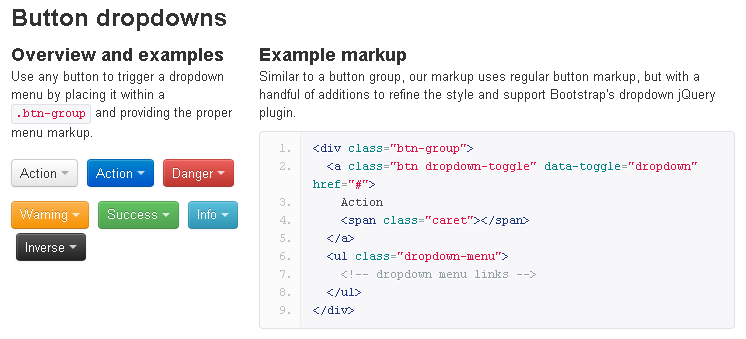
Nota aclaratoria
Aunque en la charla vamos a hablar sobre Bootstrap, consideramos más relevante:
-
Metodología y filosofía de trabajo
- Esta forma de trabajo no ha nacido de la noche a la mañana, ni tampoco ha sido creada por Twitter.
- Ha sido la propia comunidad web quien ha creado y aportado nuevas formas de entender el desarrollo front-end.
-
Compendio de buenas prácticas y nuevas tecnologías
- Es probable que Bootstrap quede desfasado en algún momento, y sea reemplazado por otra herramienta de moda. (i.e.: grid systems)
- Pero los conceptos seguirán presentes. Y estos si que irán evolucionando y adaptandose al medio.
Hablaremos sobre...
-
Ventajas
-
Desventajas
-
Consejos
-
Alternativas
Ventajas (1/5)
Utiliza componentes y servicios creados por la comunidad:
Ventajas (2/5)
Es un compendio de buenas prácticas:
Ventajas (2/5)
Es un compendio de buenas prácticas:
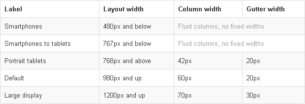
Ventajas (2/5)
Es un compendio de buenas prácticas
Ventajas (3/5)
Tiene una enorme comunidad
- GitHub info (a fecha 17 de abril del 2012)
- Wachers: 24k
- Fork: 4k
- Issues: 3k
- Contribuidores: 122
- Páginas vistas: 2 millones en los últimos 90 días
- Pull requests: 15 abiertos y 84 cerrados
- Implementaciones externas
Ventajas (4/5)
Puede servirte como herramienta ágil para construir interfaces.
- Es fácil construir rápidamente con él.
- Para prototipar apps/sitios webs en ciertos casos.
- ¿Nadie trabajando en herramientas visuales de prototipado que acaben generando código HTML/CSS como salida basándose en Bootstrap? ;)
Ventajas (5/5)
Tiene un theme por defecto bastante apañado
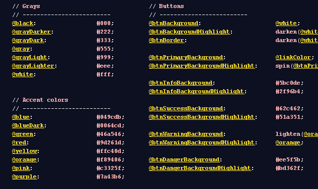
Ventajas (5/5)
Tiene un theme por defecto bastante apañado.
-
Generador externo para personalizar Bootstrap: Style Bootstrap
- Eso sí, genera un ".css". No esperes un ".less" con las variables personalizadas. Pierdes las ventajas de edición de LESS.
- "Create unique design with Bootstrap v2". Lo de "unique" es una quimera. Básicamente modificamos tipografía, color y algunos paddings.
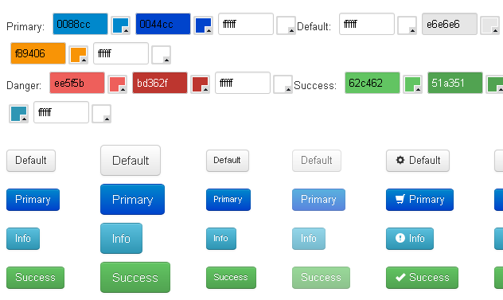
Ventajas (5/5)
Tiene un theme por defecto bastante apañado
-
Bajar un theme alternativo en Boots Watch.
- No esperemos tanta variedad como en themes de WP, por ejemplo. Básicamente cambio de tipografía y color.
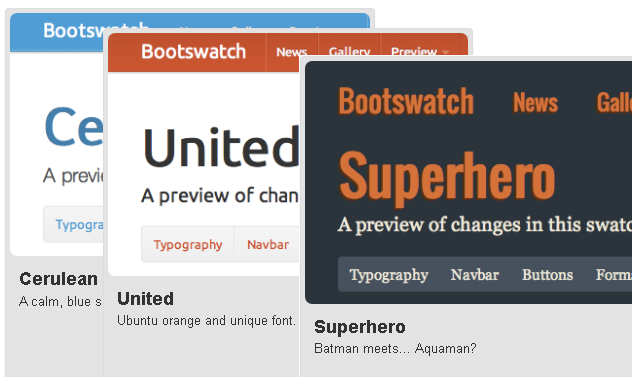
Ventajas (5/5)
Tiene un theme por defecto bastante apañado
- Y si eres un poco vago o sibarita: puedes comprar un theme en Wrap Bootstrap por un módico precio.
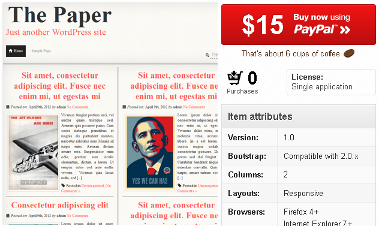
Desventajas
Es necesario adaptarse a su forma de trabajo
- Aunque la curva de aprendizaje es liviana, deberás familiarizarte con su estructura y nomenclatura.
- Si vas a utilizar el grid, recuerda que tu diseño gráfico debe estar adaptado a las 12 columnas.
Además el ancho de las columnas y gutters es variable según el dispositivo y su contexto.
- Por defecto ya tiene anchos, margenes y altos de línea.
- Es complicado (o casi imposible) cambiar de versión si has realizado modificaciones profundas sobre el core.
- Si necesitas añadir componentes que no existen (i.e.: calendario), quizá debas personalizarlos (CSS) para que mantenga la coherencia con tu diseño y cuidar el responsiveness (Bootstrap no lo hará por ti).
Consejos (1/3)
- Te puede servir como un documento entregable para el cliente (€) u otro proveedor
- Todos los integrantes de proyecto deben conocer y trabajar con Bootstrap
- Conocer las ventajas y limitaciones del toolkit.
- Conocer las implicaciones de realizar cambios importantes.
- Debe convertirse en la guía de estilos web del proyecto para maquetadores, programadores, UX, diseñadores gráficos, generadores de contenido y otros proveedores.
- Ten claro qué módulos vas a utilizar en tu proyecto
- Bootstrap se compone de muchos ficheros: 36 ficheros LESS y 12 ficheros JS
- Si piensas en mobile, piensa en responsive, comprime, cachea, reduce peticiones...
- Es probable que no vayas a necesitar todos y cada uno de los módulos. No sobrecargues.
- De cara al desarrollo, mantenimiento y rendimiento es mejor trabajar con poco código.
- Tu IDE se puede volver loco con 4000 líneas de código CSS.
Consejos (2/3)
- Aprende a trabajar con LESS
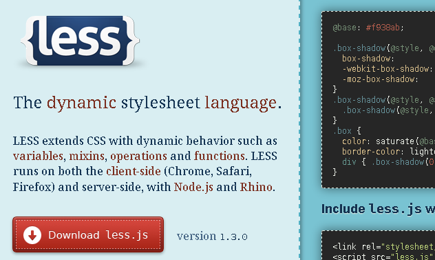
Consejos (2/3)
- Aprende a trabajar con LESS
- Twitter recomienda trabajar con LESS: “CSS changes must be done in .less files first, never just the compiled files”
- Twitter’s way: compiling LESS in local
- Otra opción: compilar, minimizar y cachear en servidor:
- IDE que soportan LESS actualmente:
- Sublime Text: LESS Sublime
- PhPStrom / WebStrom: Soporte nativo
Consejos (3/3)
- El flujo de trabajo debe cambiar
- Antes de ponerte a diseñar o maquetar piensa en cada elemento que compone una página.
- Si se trata de un módulo: organiza el trabajo de HTML/CSS/JS de éste como tal. Esto es más eficiente y facilita su reutilización. Piensa en OOCSS.
- Si te lo montas bien, tu framework front-end terminará siendo una guía de estilos. Y la inspiración debe salir de allí, no al revés.
- Can you do pair programming with your designer? by @eamodeorubio
Alternativas (1/3)
- Crea tu propia guía de estilos
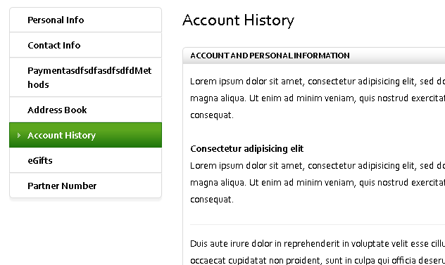
Alternativas (1/3)
- Crea tu propia guía de estilos
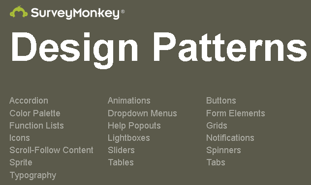
Alternativas (1/3)
- Crea tu propia guía de estilos
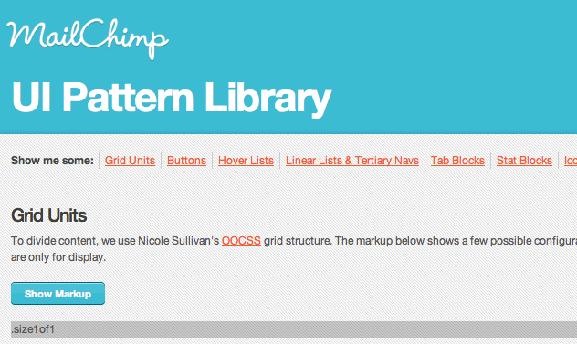
Alternativas (2/3)
- Utiliza otros frameworks
- Foundation “Rapid Prototyping and Building Framework from ZURB”
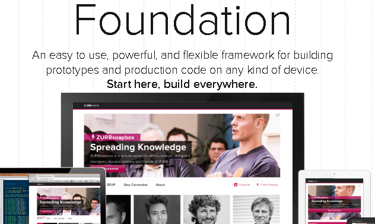
Alternativas (3/3)
- Documenta tus estilos
- Pears “Pears is an open source WordPress theme, enabling people like you to get your own pattern library up and running quickly. ”
- Vete creando tu propia librería de "reusables". Reciclar y adaptar es salir a tu hora del tajo. ;)
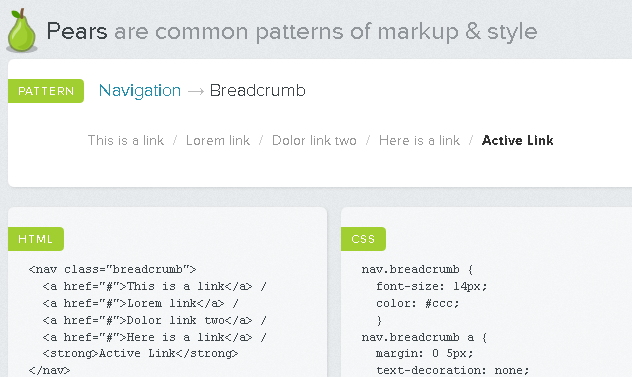
Alternativas (3/3)
- Documenta tus estilos
- Knyle Style Sheets “KSS attempts to provide a methodology for writing maintainable, documented CSS within a team. ”
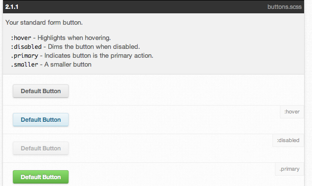
Alternativas (3/3)
- Documenta tus estilos
- StyleDocco “StyleDocco generates documentation and style guide documents from your stylesheets.”
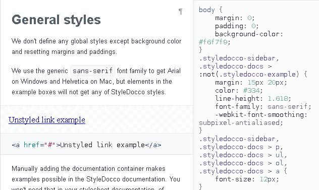
¿Preguntas?, ¿Debate?, ¿Birras?
¡Esto es todo amigos!
- Una charla organizada por:
- Créditos:
- Para saber más:
←
→
/
#